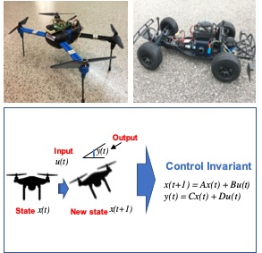
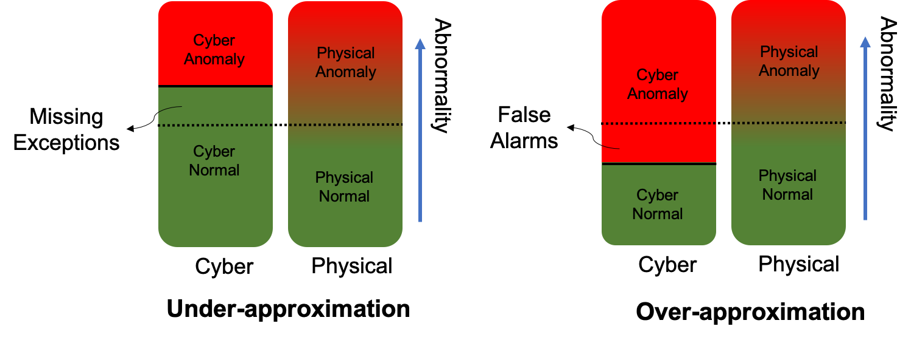
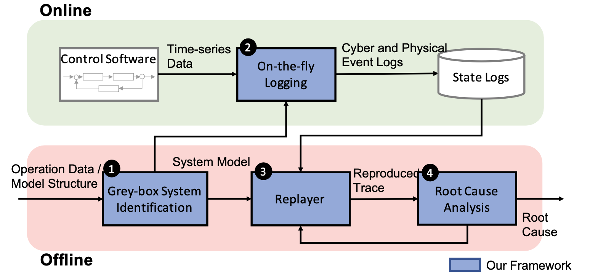

My research aims to build secure and reliable cyber-physical systems (CPS).
To this end, I incorporate several techniques from program analysis, control engineering, system modeling and software testing.
Here, I introduce the exiting research projects I have been involved in.
CPS Attack Defense -- Physical Attack Detection via Control Invariants

Robotic vehicles (RVs) are a type of cyber-physical systems that operate in the physical world under the control of computing components in the cyber world. Despite RVs’ robustness against natural disturbances, cyber or physical attacks against RVs may lead to physical malfunction and subsequently, disruption or failure of the vehicles’ missions.
To avoid or mitigate such consequences, my research presents a novel attack detection framework to identify external, physical on the fly by deriving and monitoring Control Invariants (CI) [CCS2018].
The control invariants are determined jointly by physical attributes, its control algorithm, and the laws of physics. Thus, it reflects RV's normal behaviors according to its control inputs and current physical states. Any deviation from it will be considered anomalous.
Hongjun Choi, Wen-Chuan Lee, Yousra Aafer, Fan Fei, Zhan Tu, Xiangyu Zhang, Dongyan Xu, Xinyan Deng
Support:
The research was supported, in part, by ONR.
CPS Attack Defense: Sensor Attack Recovery via Software Sensors
Attacks on autonomous vehicles are safety-critical as it could cause physical damages or even endanger human lives.
Especially, many sensor attacks have been reported recently, which fundamentally compromise the source of control.
Therefore, along with the wide deployment of the autunomous vehicles, defending against such adversarial attempts are increasingly important.
Unlike the traditional physical control systems, the emergence of computationally powerful Cyber-Physical Systems (CPS) allows new opportunities to deploy more complex software-based control components.
Advancing the previous work, we present a novel recovery technique against various sensor attacks with so-called Software Sensors[RAID 2020].
Specifically, our technique builds a predictive state-space model for the individual sensorrs based on the generic system identification technique.
Sensor measurement prediction is tailored to the individual sensors and runs as a software backup of the corresponding physical sensor. When physical sensors are under attack, the corresponding software sensors can localize and recover the compromised sensors individually and provide attack-resilient and seamless control to prevent further damage.
The research was supported, in part, by ONR under Grant N00014-17-1-2045.
Secure Control Program -- CP-inconsistency Identification

Cyber-Physical inconsistency (CP-inconsistency) is a new type of vulnerability for cyber-physical systems (CPS), which is induced by the inherent inaccuracy of general-purpose high level programming languages in describing complex physics. These vulnerabilities are safety critical and can be exploited by solely manipulating environmental conditions.
Once exploited, the control program misunderstands real physical situations erroneously, and it may fail to report real physical accidents (i.e., under-approximation) or report false alarms (i.e., over-approximation), while the RV is still operating normally. Both situations could lead to life-threatening consequences.
We develop a testing technique, called CP-inconsistency identification (CPI) [CCS2020], to detect such vulnerabilites systematically. The technique features innovative inter-paly of program anlaysis, system modeling, robot simulation and multi-objective search based testing.
Attack Investigation -- Robotic Vehicle Forensics by Replay with What-if Reasoning

Robotic vehicle (RV) attack forensics identifies root cause of an accident. Reproduction of accident and reasoning about its causation are critical steps in the process. Ideally, such investigation would be performed in real-world field tests by faithfully regenerating the environmental conditions and varying the different factors to understand causality. However, such analysis is extremely expensive and in many cases infeasible due to the difficulties of enforcing physical conditions.
Existing RV forensics techniques focus on faithful accident reproduction in simulation and hence lack the support of causality reasoning. They also entail substantial overhead. We propose RVPLAYER [NDSS2022], a system for RV forensics. It supports replay with what-if reasoning inside simulator (e.g., checking if an accident can be avoided by changing some control parameter, code, or vehicle states). It is a low-cost replacement of the expensive field test based forensics. It features an efficient demand-driven adaptive logging method capturing non-deterministic physical conditions, and a novel replay technique supporting various replay policies that selectively enable/disable information during replay for root cause analysis.